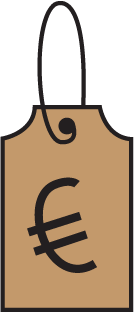
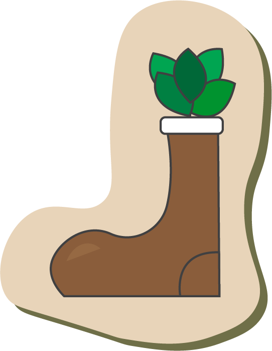

Welkom!
Welkom bij Thrifting Guide! Deze gids is voor iedereen die graag wilt beginnen aan de reis naar duurzame modekeuzes maar geen idee heeft waar en hoe je dit het beste kunt aan pakken! Amsterdam is een van de plekken die veel mogelijkheden biedt in vintage kleding shoppen en daarom de perfecte plek om van start te gaan. Daarnaast is het ook de perfecte plek voor de doorgewinterde thrifters om nog meer inspiratie op te doen aan de hand van onze prachtige gids!
Duurzaamheid in Mode
We weten allemaal dat Fast-Fashion een groot deel uitmaakt van de economie. Kleding producten is een van de meest welvarende items op de grote markt. Net zoals eten en drinken behoort kleding als bij de “basis behoeftes” van het leven. Fast-Fashion is daarom ook erg populair, de meest bekende kledingbedrijven doen aan Fast-Fashion wat natuurlijk negatieve gevolgen heeft op het klimaat.
Het stimuleren van Slow-Fashion essentieel! Duurzaamheid in mode gaat niet alleen over het verminderen van afval, maar ook over het omarmen van unieke stukken en lokale initiatieven ondersteunen. Ontdek waarom duurzaamheid in mode cruciaal is en leer hoe je kunt beginnen met het kopen van tweedehands en duurzame kleding.
Hoe en wat?
Maar hoe pak je thriften aan? Wat is de beste aanpak en waar kan je het beste rekening mee houden? Ontdek het op de volgende pagina!
Let's go!